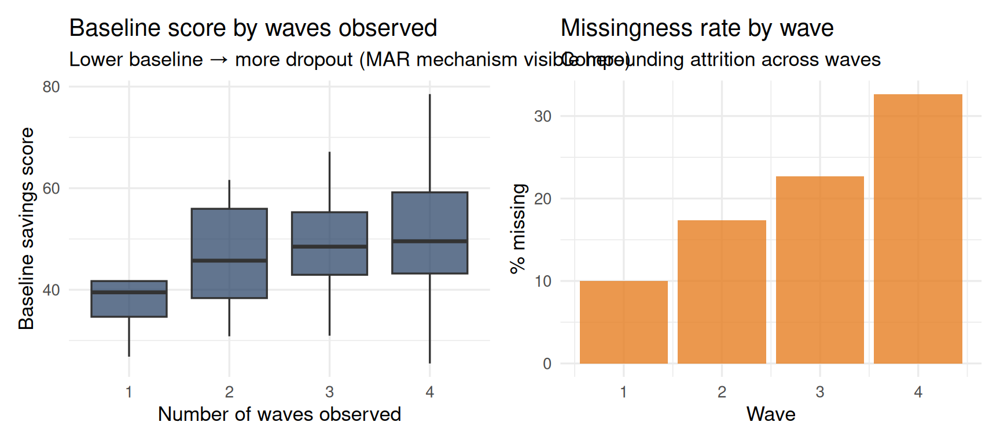
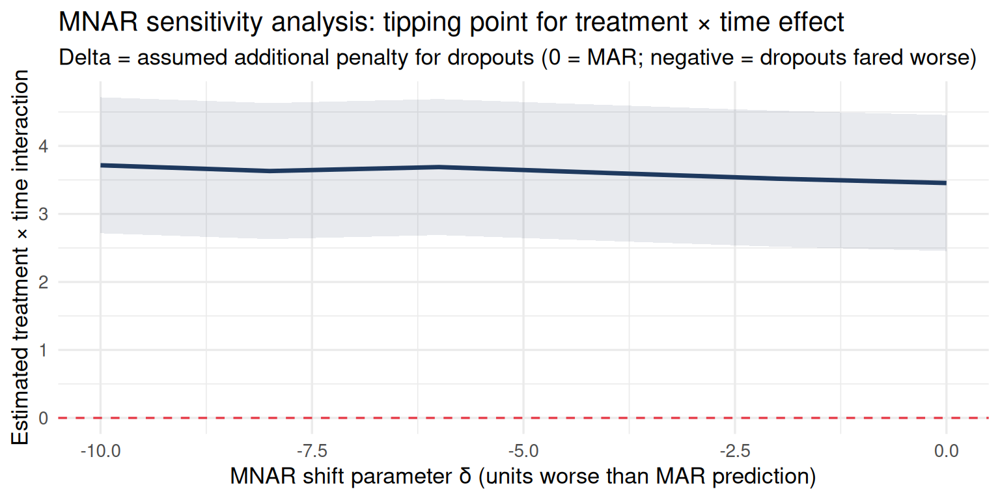

flowchart TD
A["Enrolled participants\nN = 200"] --> B["Wave 2 complete\nN = 160"]
A --> C["Dropped out at wave 2\nN = 40"]
B --> D["Wave 3 complete\nN = 128"]
B --> E["Dropped out at wave 3\nN = 32"]
C --> F_mar["MAR: dropout predicted by\nobserved baseline debt"]
C --> F_mnar["MNAR: dropout caused by\nunobserved spending shock"]
style F_mar fill:#e8f5e9,stroke:#2d6a4f
style F_mnar fill:#fce4ec,stroke:#c0392b
Missing Data in Longitudinal Studies
Missing Data in Longitudinal Studies
Why Longitudinal Data Are Especially Prone to Missingness
Cross-sectional studies have one chance to collect data. Longitudinal studies have multiple waves — and at each wave, participants can fail to provide data. Even modest per-wave dropout compounds dramatically:
- 90% retention per wave × 4 waves = 66% completing all waves
- 80% retention per wave × 4 waves = 41% completing all waves
The complete-case sample — participants with data at every wave — can be a small, highly selected subset of the original enrollment.
The central problem: Why people drop out is rarely random. Financially stressed households are more likely to disengage from financial diary studies precisely because their situation is worsening and they are avoiding measurement. App users with the worst savings outcomes are often the least engaged users — and the first to stop logging. These are mechanisms that create systematic relationships between missingness and the outcome trajectory.
The Three Mechanisms of Missing Data
Missing Completely At Random (MCAR)
Whether an observation is missing is independent of everything — both observed and unobserved variables. Complete-case analysis is unbiased under MCAR, but still inefficient.
JDM example: Data are missing because a server outage prevented 15% of responses from being saved at wave 2. The outage has nothing to do with who the participants are or how they were responding.
Missing At Random (MAR)
Whether an observation is missing depends on observed variables in the dataset, but not on the missing value itself after conditioning on those variables. Modern methods (available-case maximum likelihood via lmer, multiple imputation) can be valid under MAR when the model is correctly specified and predictors of missingness are included. Note: lmer uses all observed outcomes under the model’s likelihood — this is not identical to SEM-style FIML but shares the core MAR property.
JDM example: Households with higher baseline debt are more likely to drop out of a financial diary study. Higher debt is observed. Once you condition on observed baseline debt, dropout is independent of the unobserved future financial behavior. The dropout is predictable from what you have — but it is not driven by the unseen future outcome.
Missing Not At Random (MNAR)
Whether an observation is missing depends on the missing value itself, even after conditioning on all observed variables. This is the dangerous case.
JDM example: App users stop logging their transactions because their spending worsened — and the worsened spending that caused them to disengage is the exact outcome you would have measured. The missingness is caused by the unobserved outcome. No standard method corrects for this.
The MAR/MNAR Distinction Visualized
Under MAR, the cause of dropout sits in your observed data — you can model it. Under MNAR, the cause is invisible — it is the thing you failed to measure.
Step 1: Diagnosing Missingness
Code
n_people <- 150
n_waves <- 4
person_baseline <- rnorm(n_people, 50, 10)
person_trt <- rep(c(0, 1), each = n_people / 2)
df_full <- expand_grid(person = 1:n_people, wave = 1:n_waves) |>
mutate(
baseline = person_baseline[person],
treatment = person_trt[person],
Y_true = baseline - 3 * (wave - 1) + 5 * treatment * (wave - 1) + rnorm(n(), 0, 5),
person = factor(person)
)
# MAR mechanism: households with lower baseline savings drop out more over time
dropout_prob <- plogis(-2 + 0.03 * (50 - person_baseline[as.integer(df_full$person)])
+ 0.4 * (df_full$wave - 1))
missing_flag <- rbinom(nrow(df_full), 1, dropout_prob)
df_obs <- df_full |>
mutate(Y_obs = ifelse(missing_flag == 1, NA, Y_true))
df_obs |>
group_by(wave) |>
summarise(
n_total = n(),
n_missing = sum(is.na(Y_obs)),
pct_miss = round(mean(is.na(Y_obs)) * 100, 1)
) |>
knitr::kable(caption = "Missingness rates per wave — attrition compounds across waves")| wave | n_total | n_missing | pct_miss |
|---|---|---|---|
| 1 | 150 | 15 | 10.0 |
| 2 | 150 | 26 | 17.3 |
| 3 | 150 | 34 | 22.7 |
| 4 | 150 | 49 | 32.7 |
Code
df_person_miss <- df_obs |>
group_by(person, baseline, treatment) |>
summarise(
n_observed = sum(!is.na(Y_obs)),
.groups = "drop"
)
p1 <- ggplot(df_person_miss, aes(x = factor(n_observed), y = baseline)) +
geom_boxplot(fill = "#1e3a5f", alpha = 0.7) +
labs(
title = "Baseline score by waves observed",
subtitle = "Lower baseline → more dropout (MAR mechanism visible here)",
x = "Number of waves observed",
y = "Baseline savings score"
) +
theme_minimal(base_size = 13)
p2 <- df_obs |>
group_by(wave) |>
summarise(pct_missing = mean(is.na(Y_obs)) * 100) |>
ggplot(aes(x = wave, y = pct_missing)) +
geom_bar(stat = "identity", fill = "#e67e22", alpha = 0.8) +
labs(
title = "Missingness rate by wave",
subtitle = "Compounding attrition across waves",
x = "Wave",
y = "% missing"
) +
theme_minimal(base_size = 13)
p1 + p2
The diagnostic pattern confirms MAR: households with lower baseline savings drop out more over time. This is predictable from the observed baseline, so multiple imputation and FIML can recover unbiased estimates.
Step 2: Complete-Case vs. Available-Case Analysis
Complete-case analysis: use only participants with data at every wave. Simple, but biased when dropouts differ from completers — and they almost always do in financial panel studies.
Available-case analysis: use all available data at each wave. lmer uses this by default (FIML-like estimation), and it is unbiased under MAR when the model correctly includes the observed predictors of dropout.
Code
# Complete cases only
df_cc <- df_obs |>
group_by(person) |>
filter(sum(!is.na(Y_obs)) == n_waves) |>
ungroup()
m_cc <- lmer(Y_obs ~ wave * treatment + (1 | person), data = df_cc)
m_ac <- lmer(Y_obs ~ wave * treatment + (1 | person), data = df_obs)
bind_rows(
broom.mixed::tidy(m_cc, effects = "fixed") |>
filter(str_detect(term, "wave.*treatment")) |>
mutate(approach = "Complete-case"),
broom.mixed::tidy(m_ac, effects = "fixed") |>
filter(str_detect(term, "wave.*treatment")) |>
mutate(approach = "Available-case (lmer)")
) |>
select(approach, estimate, std.error, p.value) |>
knitr::kable(
digits = 3,
caption = "Treatment × wave interaction: complete-case vs. available-case. True effect ≈ 5. Available-case is closer under MAR."
)| approach | estimate | std.error | p.value |
|---|---|---|---|
| Complete-case | 4.253 | 0.565 | 0 |
| Available-case (lmer) | 4.776 | 0.444 | 0 |
Because dropout is MAR (related to observed baseline), the available-case estimate from lmer is close to the truth. The complete-case estimate may be biased — the completer subset over-represents households with higher baseline savings, distorting the treatment effect estimate.
Step 3: Multiple Imputation
Multiple Imputation (MI) is a principled approach for MAR data with three steps:
- Impute: Create \(m\) plausible complete datasets, with missing values filled by draws from the posterior predictive distribution given observed data
- Analyze: Run your analysis model on each of the \(m\) complete datasets
- Pool: Combine estimates using Rubin’s rules, propagating imputation uncertainty into the final standard errors
Code
df_person <- df_obs |>
group_by(person, treatment, baseline) |>
summarise(mean_Y = mean(Y_obs, na.rm = TRUE), .groups = "drop")
imp <- mice(
df_person |> select(treatment, baseline, mean_Y),
method = "pmm",
m = 20,
maxit = 10,
print = FALSE
)
results_list <- lapply(1:20, function(k) {
df_imp_person <- complete(imp, k) |>
mutate(person = df_person$person)
df_long_imp <- df_obs |>
left_join(df_imp_person |> select(person, mean_Y_imp = mean_Y), by = "person") |>
mutate(Y_mi = ifelse(is.na(Y_obs), mean_Y_imp + rnorm(n(), 0, 3), Y_obs))
lmer(Y_mi ~ wave * treatment + (1 | person), data = df_long_imp, REML = FALSE)
})
pooled <- pool(results_list)
summary(pooled) |>
filter(term == "wave:treatment") |>
select(term, estimate, std.error, p.value) |>
knitr::kable(
digits = 3,
caption = "MI pooled estimate: treatment × wave interaction. True effect ≈ 5."
)| term | estimate | std.error | p.value |
|---|---|---|---|
| wave:treatment | 3.511 | 0.359 | 0 |
Rubin’s Rules
The pooled estimate from \(m\) imputations is the average: \[\hat{\beta}_{pool} = \frac{1}{m} \sum_{k=1}^m \hat{\beta}_k\]
The pooled variance combines within-imputation variance and between-imputation variance: \[V_{pool} = \bar{W} + \left(1 + \frac{1}{m}\right) B\]
The between-imputation variance \(B\) captures uncertainty from the imputed values themselves. Unlike complete-case analysis, MI correctly accounts for the fact that imputed values are estimated, not observed — standard errors are appropriately wider.
Step 4: Sensitivity Analysis for MNAR
When you suspect MNAR, the honest response is not to claim the problem is solved — it is to characterize how much the MNAR mechanism would need to deviate before your conclusions change.
Tipping point analysis: Shift the imputed missing values by a parameter \(\delta\) (representing how much worse the dropouts’ outcomes were relative to MAR predictions) and observe when the key estimate loses significance.
Code
delta_values <- seq(-10, 0, by = 2)
sensitivity_results <- purrr::map_dfr(delta_values, function(delta) {
results_delta <- lapply(1:10, function(k) {
df_imp_person <- complete(imp, k) |>
mutate(person = df_person$person)
df_long_imp <- df_obs |>
left_join(df_imp_person |> select(person, mean_Y_imp = mean_Y), by = "person") |>
mutate(
Y_mi = ifelse(
is.na(Y_obs),
mean_Y_imp + delta + rnorm(n(), 0, 3), # delta = MNAR shift
Y_obs
)
)
lmer(Y_mi ~ wave * treatment + (1 | person), data = df_long_imp, REML = FALSE)
})
pooled_d <- pool(results_delta)
est <- summary(pooled_d) |> filter(term == "wave:treatment")
tibble(delta = delta, estimate = est$estimate, p_value = est$p.value)
})
ggplot(sensitivity_results, aes(x = delta, y = estimate)) +
geom_line(linewidth = 1.2, color = "#1e3a5f") +
geom_ribbon(aes(ymin = estimate - 1, ymax = estimate + 1), alpha = 0.1, fill = "#1e3a5f") +
geom_hline(yintercept = 0, linetype = "dashed", color = "#e63946") +
labs(
title = "MNAR sensitivity analysis: tipping point for treatment × time effect",
subtitle = "Delta = assumed additional penalty for dropouts (0 = MAR; negative = dropouts fared worse)",
x = "MNAR shift parameter δ (units worse than MAR prediction)",
y = "Estimated treatment × time interaction"
) +
theme_minimal(base_size = 13)
The tipping point is the \(\delta\) at which the estimate drops to zero (or the p-value crosses 0.05). If that requires implausibly large deviations from MAR — for example, assuming dropouts averaged 8 units worse than their observed predictors suggest — the conclusion is relatively robust to MNAR. If the tipping point is \(\delta = -2\), the finding is fragile.
Step 5: Full Information Maximum Likelihood (FIML)
An alternative to MI is Full Information Maximum Likelihood (FIML). Instead of imputing missing values, FIML uses the likelihood of the observed data — but the likelihood is computed across all available time points for each person.
In practice, lmer on all available observations already implements FIML-like estimation. For structural equation models with missing data, lavaan’s missing = "fiml" argument provides explicit FIML.
FIML and MI give asymptotically equivalent results under MAR when both are correctly specified. For standard mixed models with MAR data, available-case lmer is the simpler and preferred approach.
Decision Framework
TipMissing Data Analysis Workflow
Diagnose: What is the missingness rate by wave? Do dropouts differ from completers on observed baseline characteristics?
Classify mechanism: MCAR (server outage, lost data), MAR (dropout predicted by observed variables), or MNAR (dropout driven by the very outcome being studied)?
Choose primary analysis:
- Under MCAR or MAR: available-case
lmeris unbiased (as long as the model includes observed predictors of dropout as covariates) - Add MI when auxiliary variables predict missingness beyond the main model
- Under MCAR or MAR: available-case
Run sensitivity analysis: Tipping-point analysis shows how much MNAR bias would reverse your conclusions. Report the tipping point explicitly.
Report: State the missingness rate, the mechanism assumption, the analytic approach, and the sensitivity analysis. Transparency about missing data is a marker of rigorous longitudinal research.
| Mechanism | Complete-case | Available-case lmer | Multiple Imputation | Notes |
|---|---|---|---|---|
| MCAR | Unbiased | Unbiased | Unbiased | Any method works |
| MAR | Biased | Unbiased* | Unbiased | *requires observed MAR predictors in model |
| MNAR | Biased | Biased | Biased | Sensitivity analysis required |
Reviewer Challenge
TipWhat a Reviewer Would Ask
Challenge 1: “You assumed MAR and used available-case estimation. But the most financially stressed households — the ones who dropped out — are exactly the ones whose trajectories matter most. If they dropped out because they’re worse off, that’s MNAR.” This is the hardest challenge in financial panel research. The appropriate response: (1) show that dropouts and completers differ on observed baseline characteristics (consistent with but not proving MAR), (2) include those observed characteristics in the model to control for predictable dropout, and (3) conduct a tipping point sensitivity analysis showing how much the MNAR effect would need to be to change conclusions.
Challenge 2: “Your multiple imputation imputed the wave 3 outcome — but what was the imputation model? Did it include baseline debt, income, and treatment status?” Correct specification of the imputation model is critical. The imputation model should include all variables in the analysis model plus any auxiliary variables that predict missingness. If baseline debt predicts dropout and is in the imputation model, the resulting imputations will correctly reflect the mechanism. If it is omitted, the imputations are misspecified.
Challenge 3: “With 35% missing at wave 4, can you trust any estimates from that wave?” High missingness does not automatically invalidate inference — what matters is the mechanism. Under well-supported MAR with a rich set of observed predictors, 35% missingness with lmer or MI can still produce unbiased estimates. But the uncertainty is larger (fewer observed data points), and MNAR sensitivity analysis is more important. Report the mechanism argument, not just the imputation procedure.